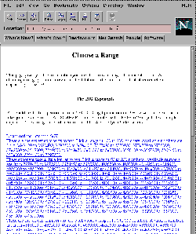

Recently, the world has seen two large problems successfully attacked with massively distributed systems, an approach sometimes called "metacomputing." On June 18, the DES Challenge (DESCHALL), which teamed up computers around the world to decipher a message encrypted with a 56-bit RSA secret key, succeeded. On August 24, the GIMPS project demonstrated that 22976221-1 is a prime number. Both DESCHALL and GIMPS are computer programs that ran with low priority on thousands of computers volunteered around the world.
Prime numbers are integers that can be evenly divided only by themselves and one. They are considered by number theorists to be basic building blocks of arithmetic; all whole numbers have exactly one set of "prime factors" which multiply together to produce them. General truths about primes, such as that there are infinitely many of them, have been pursued by mathematicians since Euclid wrote Elements 2300 years ago. Computers provide us with powers of calculation that were impossible decades ago, and inconceivable centuries ago.
But why search for ever-larger prime numbers? What good does it do? One answer is that the search for prime numbers is merely symbolic, like mountain climbing or space exploration. Just as new technologies are used to explore previously unknown places, new approaches to calculation further the reaches of mathematical knowledge. Before mechanical calculation, Edouard Lucas's 2127-1 was the largest known prime number, even though people had known forever since Euclid that there was necessarily one greater. This record stood from 1876 to 1951, which was a very busy year. A larger prime was found by a man with a mechanical calculator. Then a team with an electrical computer found a dozen higher ones.
So what difference can finding a new highest prime number make? Outside of the prestige of having your name appear in math almanacs, not a lot. George Woltman's GIMPS project is just for fun. Not that there's anything wrong with that; my personal daydream is a distributed computerized Go opponent. Other metacomputing projects, in which thousands of computers work independently and simultaneously on different portions of a large problem like weather modeling, may have bearing on less frivolous tasks. The DESCHALL project showed that 56-bit RSA keys are not secure.
Mersenne numbers, named after the French monk Marin Mersenne (1588-1648), are numbers of the form 2p-1, where p is a prime number. Since Mersenne was born, the highest known prime number since Mersenne was born has always been either a Mersenne prime or a factor of a Mersenne composite, except for a brief period in 1951.
It's not that Mersenne numbers tend to be prime, it's just vastly easier to test them. Most numbers require exhaustive factoring to determine primality, but it's possible to test a Mersenne number for primality with only bit-rotation and addition, using a method called the "Lucas-Lehmer test." The relative ease of the Lucas method of verifying primality is what made Lucas' prime, 2127-1, reign as the highest known prime number before mechanical computing devices. Since 127 is prime, Lucas' prime is also a Mersenne prime.
Currently 35 Mersenne numbers are known to be prime, and more are being tested even as you are reading these words. The tool is a mprime, written by George Woltman and optimized for the Intel x86 architecture. mprime survives sudden shutdown or termination by keeping its state written out to a file, so not all work is lost if the program is interrupted. A more generic version of mprime suitable for other architectures is mers, distributed as C source code by Will Edgington, at ftp://ftp.delta.com/pub/users/mersenne.
Here's how to enroll your computer in GIMPS.
machine ftp.mersenne.org login anonymous password mprimescripts_user macdef init binary get database.gz ! gunzip --force database.gz quit
You'll also need to set up a cron job (type man cron or man crontab at your Unix command line) to periodically FTP from ftp.mersenne.org. A crontab entry like this will do:
# periodically download a new database 51 3 25 * * ftp ftp.mersenne.org
(The five fields at the beginning of crontab entries represent the minute, hour, day of month, month, and day of week. The above entry will download a new database at 51 minutes after 3 am, on the 25th of the month, on every month (that's the first *) and regardless of the day of the week (the second *). Please choose different numbers to avoid a network bottleneck. Better yet, uncomment the # ftp ftp.mersenne.org line in mprime.sh after your .netrc file is working. People installing mprime on machines without permanent network connections (like myself) will of course get errors unless their dialup connections are brought up before running FTP.
When this cron job runs, it invokes the FTP program with one command line argument: ftp.mersenne.org. The FTP program then connects to ftp.mersenne.org and checks the local .netrc file for instructions pertaining to the connection. That .netrc file will make FTP log in as anonymous, provide a password of mprimescripts_user, change the mode of the FTP connection to binary, and download database.gz, the database of factors. After downloading, the line starting with the exclamation point is passed to a shell. Provided gunzip is available, the database will be uncompressed, overwriting the old one (that's what the --force is for).
Although steps two, three, and four could have been included in a slightly more complex Perl program, the vast majority of the system's running time is spent waiting for mprime to complete, which means that the program will be mostly sitting around doing nothing. That's why we want a program that will consume minimal memory. The winner isn't Perl, alas, but a shell script: and a little used one at that: ash. I don't use Perl for everything, just what it's best suited to: practically extracting data from a report. That report is the "Choose a Range page" and the data are the range of numbers to be given to mprime.
|  Figure 1: The Choose a Range Page, parsed by NewAssignment.pl |
The shell script mprime.sh invokes the mprime program with command line arguments read from a file called assignment, stands patiently by while it runs, and then invokes NewAssignment.pl once mprime completes its assignment and needs a new one. To preserve mprime's "killability," mprime.sh checks the results file created by mprime to see if mprime actually finished its task or was terminated abnormally.
Unless the words "Please send the results file to" appear in the results file, it is assumed that mprime was killed by a signal, which means that something is wrong and it's time for mprime.sh to quit. Otherwise, mprime.sh archives the results file, mails George Woltman the results file, and runs NewAssignment.pl to choose a new assignment. You'll have to edit lines 59 and 76 so that the mail program on your system is invoked with the correct options.
Choosing a new assignment is too complex a task for a shell script; luckily, Perl's regular expression support makes it easy. NewAssignment.pl downloads the web page, chooses a range based on its contents, and mails George Woltman a claim to the range. This approach could easily be adapted to other large problems that can be cleanly divided into smaller problems.
The first step in choosing a new GIMPS assignment is obtaining the list of available assignments by downloading George Woltman's Choose a Range page at http://www.mersenne.org/range.htm. The lynx text-based web browser is used; it takes a command line switch, -dump, that makes it print a web page to standard output. In Perl, external programs are launched (and their output retrieved) with backquotes:
# load the "reserve a range" web page into a variable:
$ChooseARangePage =
'lynx -dump http://www.mersenne.org/range.htm';
This gives us the web page we need. We could also have used the LWP library from the CPAN to create a virtual web browser, and then we wouldn't even need lynx.
There are three sets of ranges. Each range begins with a description of what the task is, followed by the words "a range of" and the minimum recommended range size, followed by more words, the last of which is "from," followed by a comma-separated list of pairs of the form M to N, where M and N are both natural numbers. A period terminates the range.
This structure can be represented as a Perl regular expression:
m/a range of (\d+) .*? from ([\s0-9to,]+)\./s
Here's a quick review of the regular expression atoms used:
$RangeMatcher = '.*a range of (\d+) .* from ([\s0-9to,]+)\.';
$RangeMatcher is defined as a single-quoted string so that the special regex characters aren't translated. If it were doublequoted, the backslashes in it would be inadvertently interpreted before the match took place.
Coupled with another word to localize the search to a part of the file, this regex remembers the number of numbers we want to test and the comma-separated list of ranges. We can assign them to two variables:
($PortionSize, $RangeListing) =
($ChooseARangePage =~ m/$PreText$RangeMatcher/s);
We know what $RangeMatcher matches now; the other part of the regex is $PreText, the text before the range. There are five tasks we might want our computer to attempt. The first three are called B1, B2, and B3 in NewAssignment.pl, and search for increasingly larger sets of Mersenne primes. Task R checks "reclaimed" numbers that were dropped by other users, and task F factors known composites to speed up others' Lucas-Lehmer tests. Each task requires a slightly different regular expression for the Choose a Range page; task F in particular requires that the -f command-line switch be provided to mprime.
Once we've decided what we want to do by randomly selecting B1, B2, B3, R, or F in line 22, the script invokes lynx to capture the web page. This happens inside a loop, in case the local network or www.mersenne.org is down. Once we have the web page, it's matched against /$PreText$RangeMatcher/s, and if all goes well it matches and sets $PortionSize and $RangeListing appropriately for whichever assignment we've chosen.
Making it past the until loop means that $PortionSize and $RangeListing have been successfully set. The only change that might be necessary is if we're running mprimescripts on a speedy machine that can handle an unusually large range (line 42). Massaging $RangeListing takes a few steps. The script strips the whitespace out (line 44), splits the result on commas into @Ranges (line 45), chooses one of those elements at random (line 47), and splits on the word "to" to extract the lower and upper boundaries of the range (line 49). If we're ambitious enough to have increased $PortionSize in line 42, it's possible that our range isn't big enough, in which case lines 51 through 55 redefine $High as $Low plus $PortionSize.
All that remains is to write $Assignment into the assignment file, and mail mprime and George Woltman with the selected range. All mail sent from mprimescripts has subject lines which could be filtered by software such as procmail and directed to another Perl script for similar automation. Of course, to adapt this system for use in a different distributed idle-time project, you'll need an equivalent of George Woltman: a central authority responsible for declaring which assignments are available.
Mathematicians who have theories about where the next Mersenne prime occurs can reserve that range in the hope of getting their names in the history books; in contrast, NewAssignment.pl chooses its assignment randomly to minimize the possibility of collisions, since random selection from a long list of choices is a good way to lower the probability of duplications. In fully automated systems designed from the beginning to be distributed, the clients might query a central server for their next assignment instead. The DESCHALL project, for instance, was distributed as source code, and each client program in the brute force search of the 56-bit RSA key space checked into a central key server regularly to get a new range of numbers. (Had DESCHALL not been distributed as source code, this would have been a substantial security risk. Allowing foreign programs access to your computer is risky without assurance that the metacomputing client does only what it's supposed to be doing.)
_ _END_ _
{kind=link}